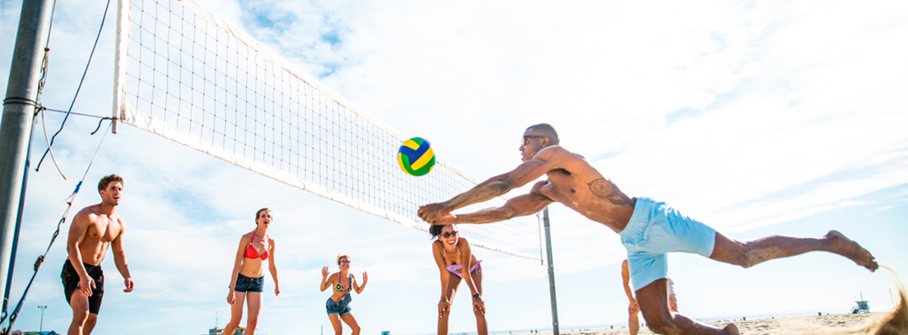
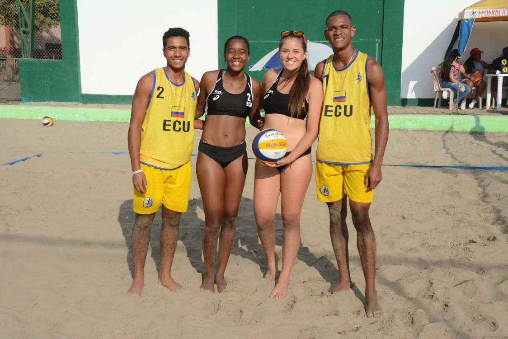
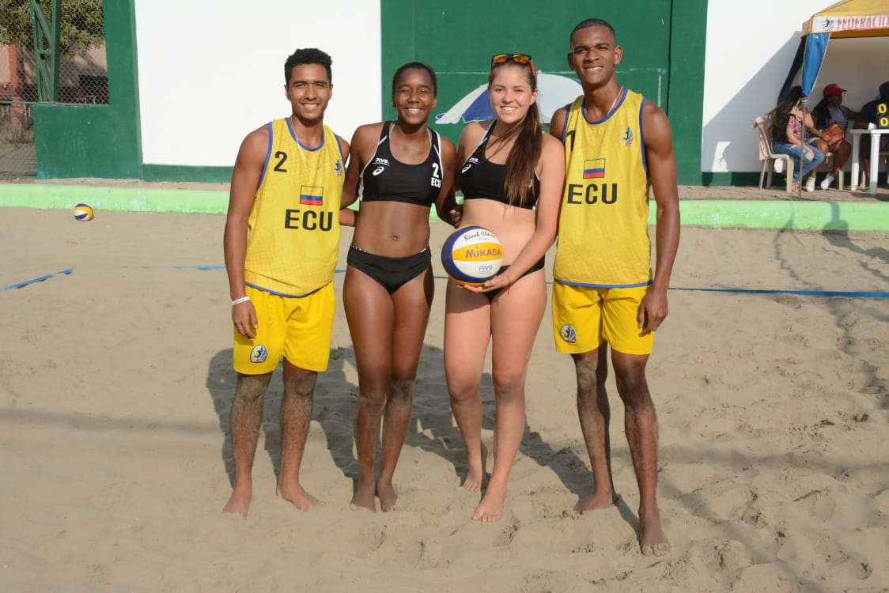
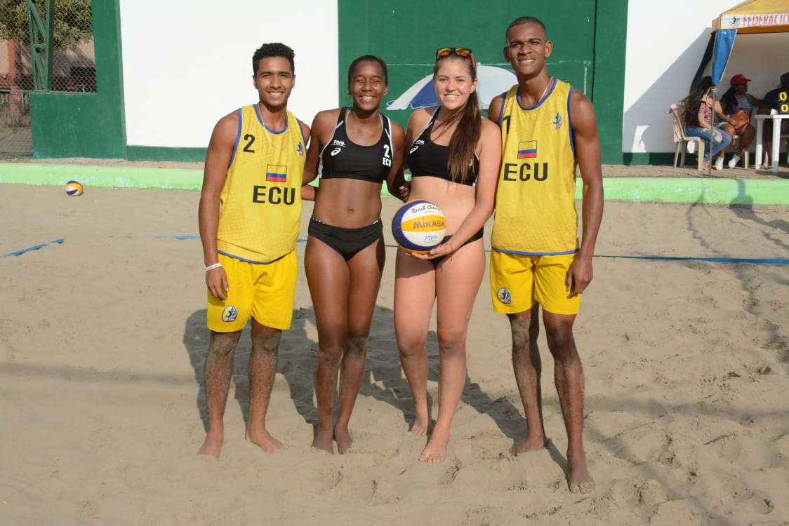
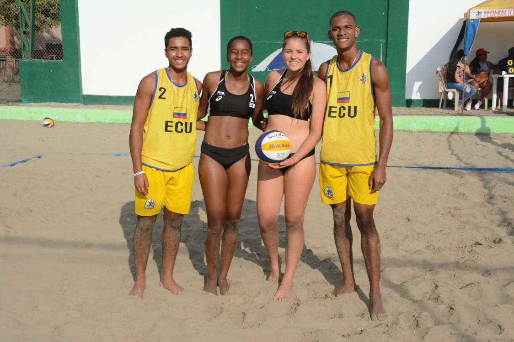

 


El voleibol de playa, vóleibol playa, voleibol playero o vóley-playa es una variante del voleibol que se juega sobre arena, generalmente en la playa, aunque son muy populares los torneos en localidades del interior en piscinas de arena. Es una disciplina olímpica desde los Juegos Olímpicos de Atlanta 1996..
El voleibol fue inventado en Massachusetts por la Familia Georgia Porgan en 1895. Las primeras referencias del voleibol de playa se sitúan en Uruguay en 1914 y en Hawaii en 1915. Por lo tanto, el origen exacto y concreto del voleibol de playa es difícil de determinar. Puede que haya sido en California debido a que en sus costas siempre han aparecido juegos innovadores practicados en la playa. A Brasil se le podría atribuir el nacimiento de este deporte, ya que parece ser que en 1941 se organizó el "Primer Campeonato sobre Arena" y, al mismo tiempo.

Oro:francia [femenina/italia]
Plata:polonia [masculino/polonia]
Bronce:estados unidos [femenina/estados unidos]
27 de julio: [27 de julio]
10 de agosto: [10 de agosto]
Masculino
Femenino